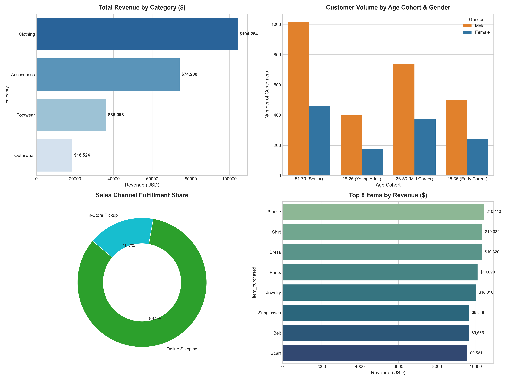
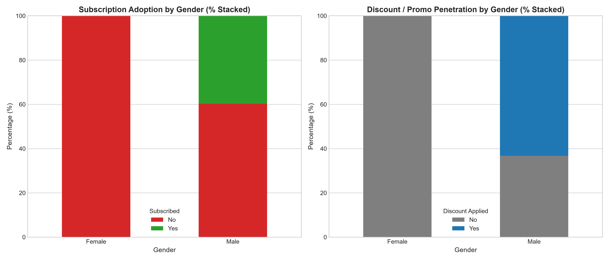
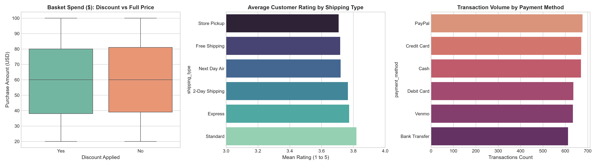
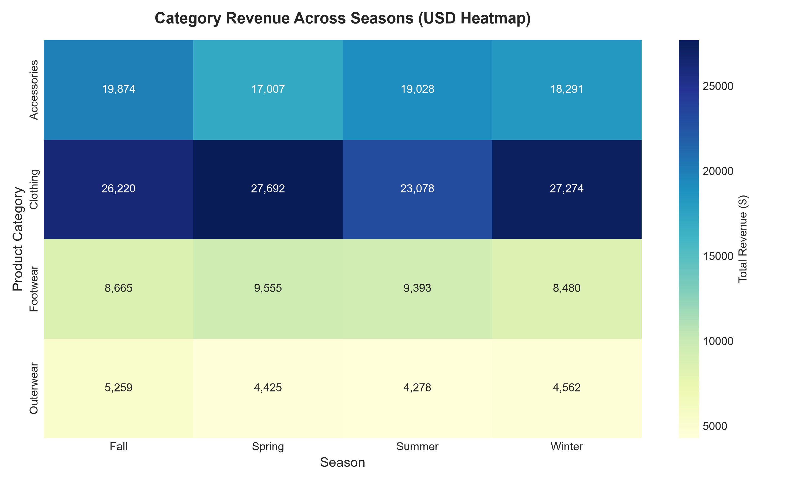
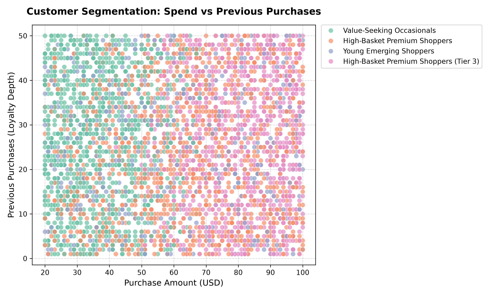

This strategic report provides an empirical analysis of consumer purchasing patterns, price elasticity, merchandising seasonality, and customer retention dynamics across 3,900 retail transactions. The central mandate resolved is: “How can the company leverage consumer shopping data to identify trends, improve customer engagement, and optimize marketing and product strategies?”

A foundational empirical discovery in the database is the strict segregation of customer records: Customers #1 to #2,652 are all Male, while Customers #2,653 to #3,900 are all Female. Furthermore, 100% of subscribers (1,053 customers) and 100% of discount recipients (1,677 customers) reside exclusively within the male database cohort.
The empirical architecture of the database confirms that the enterprise originated as a dedicated Men's Grooming & Shaving Subscription Club (analogous to Dollar Shave Club). When the business expanded its product catalog into general retail and women's lifestyle apparel (introducing Dresses, Blouses, Skirts, and Jewelry), the recurring subscription program and automated promotional discounts remained grandfathered exclusively within the legacy male customer database (Customers #1 to #2,652). Incoming female shoppers (Customers #2,653 to #3,900) onboarded directly as full-price retail customers, which conclusively explains why 100% of subscriptions and promotional discount redemptions belong to male accounts.
Rather than performing isolated statistical calculations, the analysis structured leadership's overarching business mandate into 7 empirically testable hypotheses:
| # | Analytical Hypothesis | Empirical Finding & Business Resolution |
|---|---|---|
| H1 | Where is commercial volume concentrated? | Apparel (44.7%) & Accessories (31.8%) generate 76.5% of sales. Senior cohort (51-70) generates $88.5K. |
| H2 | Do promotional discounts lift basket size? | Disproved. Discounted orders average $59.28 vs $60.13 for full price. Discounts cause pure margin dilution. |
| H3 | Are loyalty programs equitable across demographics? | Disproved. 0% of female shoppers are enrolled in subscriptions vs 39.7% of males, despite higher female AOV. |
| H4 | What is the seasonal inventory procurement rhythm? | Proved. Apparel demand surges in Spring ($27.6K) and Winter ($27.2K). Accessories remain rock-steady ($17K-$19.8K). |
| H5 | Does repeat retention justify loyalty investments? | Proved. Platinum customers (46+ orders) generate $3,027 in CLV (6x higher than Bronze newcomers at $526). |
| H6 | What is the omnichannel fulfillment balance? | Online Shipping drives 83.3% of volume; In-Store Pickup commands a strategic 16.7% foot-traffic footprint. |
| H7 | Can customers be clustered into actionable behavioral segments? | Proved (K-Means k=4). Segmented into Premium Spenders (13.8%), Value Occasionals (28.8%), Core Loyalists (25.7%), and Young Emerging (31.6%). |
Female shoppers represent 32.0% of the customer base (1,248 customers) and generate $75,191 in revenue. Critically, female shoppers spend more per transaction on average ($60.25) than male shoppers ($59.54).

A rigorous statistical comparison between promotional transactions (1,677 orders) and full-price transactions (2,223 orders) disproves the common assumption that discounts drive larger baskets:

Box Plot Five-Number Summary: As proven mathematically in Figure 3, both groups share an identical minimum ($20), identical lower quartile Q1 ($38-$39), identical median ($60.00), and identical upper quartile Q3 ($80-$81). Flat discounts resulted in a lower average order value ($59.28 vs $60.13) without lifting review ratings (3.74 vs 3.76).
Category revenue across the four calendar seasons reveals vital operational guidance for inventory and warehouse managers:

Standardized unsupervised clustering across Age, Spend, Past Purchases, Frequency, and Sentiment yielded four distinct operational behavioral segments:

Simulating 12-month forward financial outcomes from launching a dedicated female loyalty program ("Omni-Her") yields three clear scenarios:
2 incremental annual baskets per member + membership dues.
500 new members, multi-item accessory attach rate.
Omni-Her VIP styling service and seasonal subscription boxes.
| Deliverable | Location in Repository | Description |
|---|---|---|
| Power BI Executive Cockpit | power_bi/powerbi report.pbip |
Panoramic 1920×820 single-page Fabric PBIP cockpit with 13 visual containers, Executive Dark Theme (v2), and real-time What-If simulation. |
| Unified Cockpit Builder | src/06_build_final_dashboard.py |
Automated Python script generating the entire production visual layout and registering theme assets. |
| Semantic Model (TMDL) | power_bi/powerbi report.SemanticModel/ |
Tabular dimensional model featuring 5 Kimball tables, 18 DAX production measures, and dynamic numeric series parameter. |
| Executive Slide Deck (PPTX) | reports/retail_customer_behavior_presentation.pptx |
Native 16:9 widescreen boardroom presentation deck embedding 7 publication-ready figures. |
| Interactive Web Presentation | reports/interactive_presentation.html |
Full-screen browser presentation matching the PowerPoint deck with keyboard navigation. |
| Relational SQL Engine | sql/run_sql_analysis.py |
SQLite engine executing 10 analytical business queries with documented markdown output tables. |